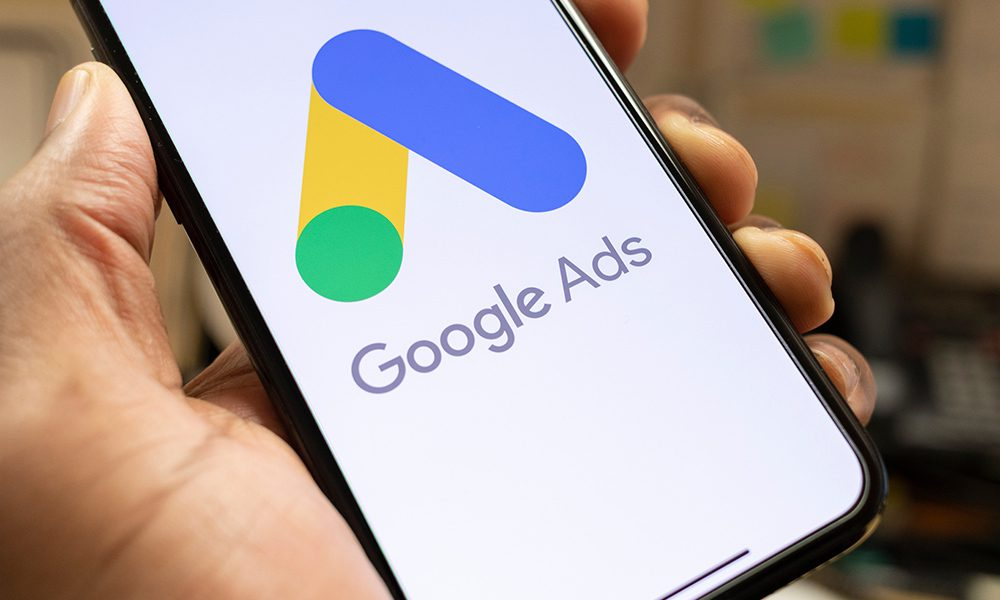

At TechLink, we understand the power of advertising in today's competitive marketplace. Our comprehensive advertising solutions are designed to help businesses of all sizes reach their target audience and achieve their marketing objectives with maximum impact. From traditional print ads to digital campaigns across social media platforms and search engines, we offer strategic planning, creative development, and targeted placement to ensure that your message resonates with your audience and drives meaningful results for your business. Whether you're looking to increase brand awareness, drive website traffic, or boost sales, our team of advertising experts is here to help you succeed.
We believe that one-size-fits-all advertising solutions simply don't cut it in today's dynamic marketplace. That's why we take a customized approach to every advertising campaign we undertake, tailoring our strategies and tactics to align with your specific goals and objectives. Whether you're launching a new product, promoting a special offer, or building brand recognition, we work closely with you to understand your target audience, messaging, and desired outcomes, crafting campaigns that resonate with your audience and drive action. With our data-driven approach and creative expertise, we deliver advertising solutions that are not only effective but also cost-efficient and measurable.
In today's data-driven world, the ability to track and measure the performance of advertising campaigns is essential for maximizing return on investment (ROI) and optimizing future efforts. That's why at TechLink, we leverage advanced analytics and reporting tools to provide our clients with actionable insights into the effectiveness of their advertising efforts. From click-through rates and conversion metrics to audience demographics and engagement levels, we provide comprehensive reporting and analysis to help you understand what's working, what's not, and where to focus your resources for maximum impact. With our data-driven approach, you can make informed decisions, optimize your advertising spend, and achieve greater success with your marketing efforts.
